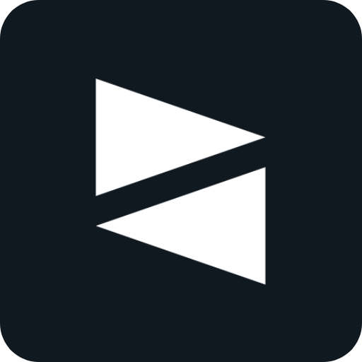

@evitcastudio/kit

@evitcastudio/kit
A lightweight, extensible framework and developer toolkit for the Vylocity Game Engine.


Features
- Modular Plugin Architecture: Centralized service locator (
Kit.registerPlugin,Kit.getPlugin) with lifecycle hooks and a decoupled typed event bus (Kit.on,Kit.off). - Official Plugins Included:
Camera(Lens): 5 specialized camera types (Follow,Pan,Spectate,Influence,Transition), 29 shake presets, smooth zoom, zero-pop transitions, and native 2D canvas debug overlays.Network: Structured client-server packet communication with registered names and automatic indexing for bandwidth optimization.
- Developer CLI (
kit):kit init: Interactive scaffolding for Singleplayer and Multiplayer game templates.kit build: Zero-config compilation, asset hashing (.vyr), metadata manifest generation, and production minification/obfuscation.kit host: Built-in local HTTP and game server hosting with hot-reloading and LAN network URLs.kit create: Instant boilerplate generator for typed plugins.kit doctor: Comprehensive environment and project health diagnostics.
- Smart Asset Pipeline: Fast hashing, automatic passthrough for subdirectories, and automatic metadata manifest generation (
resource.json,bounds.json,sizes.json,icon-points.json). - Zero-Config TypeScript: Powered by Bun for blazing fast bundling, incremental watch mode, and complete type safety.
Installation
# Global CLI installation (recommended)
bun install -g @evitcastudio/kit
# Or as a project dependency
bun add @evitcastudio/kit
Quickstart
# 1. Initialize a new project
kit init my-game --single --install
# 2. Build game and assets
cd my-game && kit build
# 3. Host locally
kit host
Your game will immediately be accessible at http://localhost:8090 (or http://localhost:30000 for multiplayer).
CLI Reference & Usage
Kit includes the kit CLI for scaffolding, asset compilation, boilerplate generation, and local testing.
Global Options
-v, --verbose: Enables verbose output and detailed debugging logs.-h, --help: Displays help and usage information.-V, --version: Displays the installed Kit CLI version.
kit init [name]
Initializes a new game project. Run without arguments for an interactive setup prompt.
# Interactive setup
kit init
# Quick start with flags
kit init my-game --single --install
| Option | Description | Default |
|---|---|---|
[name] |
Project folder name. | kit-project |
-s, --single |
Scaffolds a single-player game template. | false |
-m, --multi |
Scaffolds a multiplayer game template. | false |
-f, --force |
Overwrites destination folder if it already exists. | false |
-i, --install |
Automatically runs bun install after scaffolding. |
false |
kit build
Compiles TypeScript application code to dist/, hashes raw assets into unique identifiers (.vyr), mirrors asset subdirectories, and generates metadata manifests.
# Zero-config build (auto-detects project architecture)
kit build
# Watch mode (incremental rebuilds on source or resource changes)
kit build --watch
# Production build (minified, obfuscated identifiers, stripped sourcemaps)
kit build -p
| Option | Description | Default |
|---|---|---|
-i, --in <path> |
Input resource directory containing raw game assets. | ./src/resources |
-o, --out <path> |
Output directory for processed assets and bundled code. | ./dist |
-m, --manifest <path> |
Custom destination path for resource.json. |
./resource.json |
-w, --watch |
Watches source and resource folders for auto-rebuilding. | false |
-p, --prod |
Production mode (minification, mangled identifiers, no maps). | false |
--minify / --obfuscate |
Granular syntax minification or identifier mangling. | false |
--sourcemap <mode> |
Sourcemap mode (none, linked, inline, external). |
linked |
--app / --no-app |
Toggles application code bundling. | true |
Generated Metadata Manifests
During build, Kit produces optimized metadata indices in your project:
resource.json: Maps original human-readable asset filenames to obfuscated engine identifiers (uuid.vyr).bounds.json&sizes.json: Pre-calculated collision boundaries and dimensions for icons and tiles.icon-points.json: Defined anchor points and equipment attachment coordinates for sprites.
kit host
Hosts your compiled game project locally for browser or multiplayer testing.
# Host dist folder on default port 8090
kit host
# Build before hosting and specify custom port
kit host -b -p 8080
| Option | Description | Default |
|---|---|---|
-p, --port <number> |
Port to bind the server to. | 8090 |
-d, --dir <path> |
Directory of built files to serve. | ./dist |
-b, --build |
Runs kit build prior to starting server. |
false |
kit create <type> <name>
Scaffolds typed boilerplate into an existing Kit project.
kit create plugin Inventory
Generates src/plugins/inventory.ts subclassing KitPlugin with lifecycle hooks ready to extend.
kit doctor
Inspects your local environment and project health (Bun runtime, Git availability, package.json, project architecture, and build pipeline).
kit doctor
Runtime Resource Loading
Kit.setResources() loads the generated resource.json manifest into the Vylocity engine prior to calling VYLO.load():
import resourceJSON from 'resource.json';
// Initialize engine with mapped resource identifiers
await Kit.setResources(resourceJSON);
await VYLO.load();
Plugins
Kit features a modular plugin architecture. Plugins register via Kit.registerPlugin(), are retrievable globally through Kit.getPlugin(name), and communicate across decoupled systems using Kit's typed event bus.
import { Kit } from '@evitcastudio/kit';
import { CustomPlugin } from 'custom-plugin';
// Register with Kit
const plugin = Kit.registerPlugin(CustomPlugin);
// Retrieve anywhere by plugin name
const plugin = Kit.getPlugin<CustomPlugin>('CustomPlugin');
Official Plugins
1. Camera Plugin (Camera / @evitcastudio/lens)
High-performance 2D camera system powered by @evitcastudio/lens. Supports 5 specialized camera types, 29 shake presets, smooth zoom, zero-pop transitions, native canvas debug overlays, and automatic event dispatching.
Setup & Quickstart
import { Kit, Camera } from '@evitcastudio/kit';
// 1. Register with Kit (indexes under name 'Camera')
const camera = Kit.registerPlugin(Camera);
// 2. Track player entity with smooth lerping & deadzone
camera.createFollowCamera('main', playerMob, {
lerp: 0.1,
deadzone: { width: 64, height: 64 }
});
Seamless Transitions
Blend smoothly between cameras or targets with Hermite spline interpolation and spring-damping (zero visual pop):
await camera.switchTo(bossCamera, {
duration: 800,
smoothing: 'smoothDamp', // or 'cubicSpline'
springTension: 170,
springFriction: 26
});
Screen Shake & Zoom
// Trigger built-in presets or infinite ambient shakes
camera.shakePreset('explosion-large');
camera.shakePreset('rumble', undefined, true);
// Smooth zoom animations with 30+ easing equations
camera.zoom(2, 500, 'easeOutCubic');
camera.zoom(1, 400, 'easeInOutQuad'); // Reset
Camera Event Bus
All camera lifecycle events automatically dispatch to Kit's global event bus (Kit.on), allowing audio, gamepad vibration, or UI systems to decouple from camera logic:
Kit.on('Camera', 'shake-start', (event) => {
console.log('Camera shaking:', event.data.preset);
});
Kit.on('Camera', 'transition-start', () => {
// e.g. animate cinematic bars
});
Native Debug Overlay & Gizmos
Built-in 2D canvas overlay for debugging cameras, bounds, target vectors, and crosshairs:
camera.setDebugMode({
enabled: true,
showCameraMarkers: true,
showTargetLines: true,
showBounds: true,
showCenterCrosshair: true,
bounds: { minX: 0, maxX: 2000, minY: 0, maxY: 2000 }
});
2. Network Plugin (Network)
Handles client-server packet communication with registered packet names, automatic indexing, and minimal bandwidth usage.
import { Kit, Network } from '@evitcastudio/kit';
const network = Kit.registerPlugin(Network);
// Client-side: register server packet definitions & listen
network.registerPackets(['CHAT_MESSAGE', 'PLAYER_HEAL'] as const);
network.on('CHAT_MESSAGE', (client, senderName, message) => {
console.log(`[${senderName}]: ${message}`);
});
Plugin Events
Plugins can emit and listen to events across the entire application:
// Listen for an event from any plugin
Kit.on('plugin-name', 'event-name', (event) => {
console.log(event.data, event.timestamp);
});
// Remove listener
Kit.off('plugin-name', 'event-name', listener);
License
MIT © Evitca Studio & doubleactii